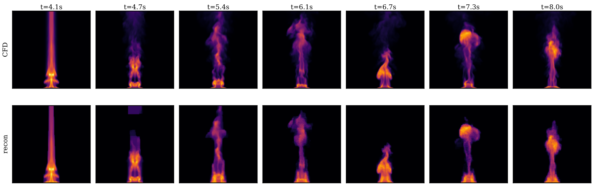
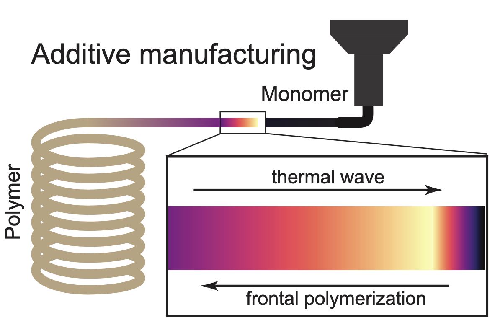
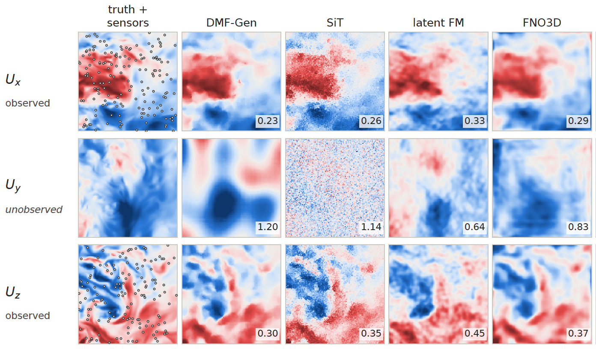
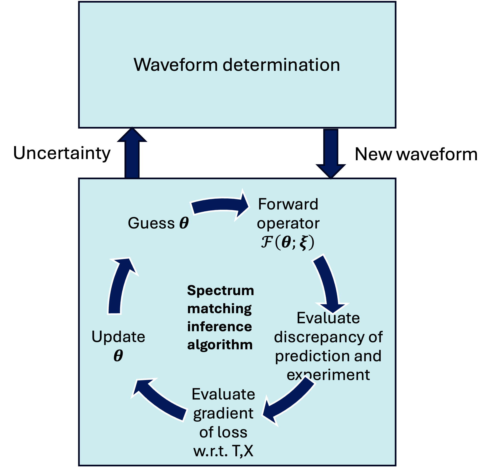
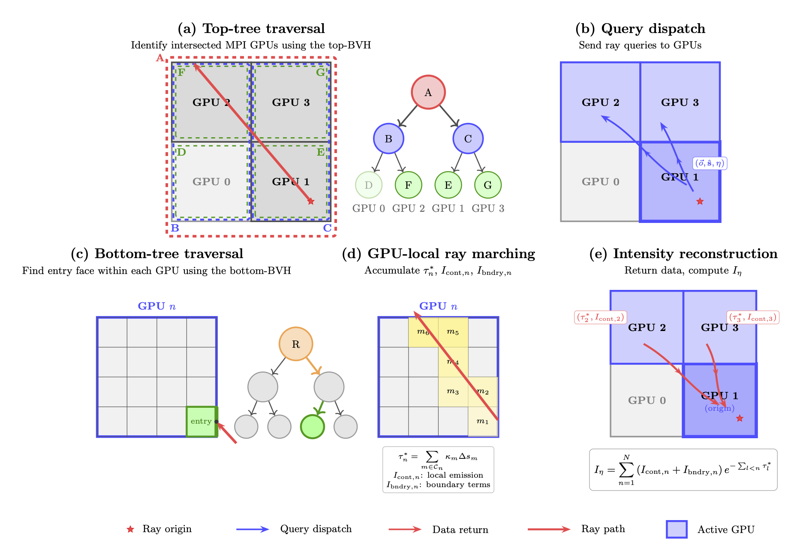

Ph.D. Candidate, Mechanical Engineering · Massachusetts
Institute of Technology
I research at the intersection of physical AI, thermal fluids modeling, and inverse optics
sensing. By combining data-driven methods with high-performance computing, I have been able to construct
simulation and inference systems that recover what cannot be measured directly and run them at the scale real
problems demand.
Former Google Research simulation researcher · ESSCI Research Fellow (2026–2027) · GE
Vernova Fellow (2025–2026)
Three threads run through my research — physical AI, thermal-fluid modeling, and
inverse optics sensing — held together by high-performance computing. Most projects sit in more than one.
Differentiable physics & inverse problems

MIT · 2025–present
Differentiable rendering for hyperspectral flame tomography
A differentiable-rendering framework for gradient-based 3-D reconstruction of temperature and species
fields from hyperspectral images, built on GPU-accelerated non-gray radiative transfer in CUDA, JAX, and
Julia, with diffusion and attention priors for sparse-view reconstruction.

MIT · 2023–present
PDE-constrained inverse modeling of energetic materials
PDE-constrained sensitivity methods that infer material properties and chemical kinetics from
thermal imaging, thermocouple, and spectrometer measurements of propagating reaction fronts.
Differentiable solvers with adjoint sensitivities make the estimation scalable, and Bayesian inference
over reaction-diffusion models keeps results physically consistent and uncertainty-aware.
Machine learning for physical systems

MIT · 2025–present
Digital twins from sparse sensor data
A global–local attention framework that fuses a learned global latent state with local sensor
observations to reconstruct and forecast physical fields — including components no sensor observes —
with quantified uncertainty with generative flow matching, trained on reacting-flow LES generated in
OpenFOAM with detailed
chemistry.

MIT · 2026–present
Reinforcement learning design of experiments
Reinforcement learning combined with greedy active learning to decide what measurement to take next,
generating custom wavelength-modulation spectroscopy waveforms at roughly 1 ms latency and accelerating
information gain 20×–100× over state-of-the-art methods.
High-performance & distributed simulation

Oak Ridge National Laboratory / UConn · 2020–2024
CUDA Monte Carlo ray tracing for emitting media
Led development of a CUDA 3-D forward ray-tracing solver with a line-by-line spectral database,
coupled to OpenFOAM. BVH-based parallelization gave a >400× speedup and scaled to 1,500 GPUs on a
top-3 supercomputer; later work with Kokkos and MPI addressed the communication bottlenecks.
Google Research · 2024
Lagrangian particle tracking on TPUs
A scalable multi-TPU Lagrangian particle-tracking solver for differentiable wildfire CFD in Swirl-LM,
tested to 250 TPU cores. Optimizing SPMD execution meant reading TensorFlow and XLA HLO IR directly —
which also surfaced a compiler bug I reported.
Methods and software architecture are inseparable in my work: a model has to be both
scientifically useful and practical at accelerator scale.
Differentiable & inverse simulation
Differentiable PDE, radiative-transfer, spectroscopy, and rendering models with adjoint sensitivities for
gradient-based inference, instrument calibration, and system identification.
JAX · Julia · CUDA · adjoints · Monte Carlo ray tracing · line-by-line spectra
Machine learning for physical systems
Attention and diffusion models, generative priors, and reinforcement learning for reconstruction,
forecasting, and experiment design under sparse observation.
High-fidelity modeling of fluid flow, combustion, radiative transfer, heat transfer, and multiphase
transport, plus the reduced-order models that make them tractable.
Inlet Conditions and Fuel Effects on Structures in a Backward-Facing Step Combustor
Tricard, N. & Bojko, B. Journal of Propulsion and Power 42(2), 318–332. DOI ↗
Journal article · 2025
Hybrid physics-machine learning model for multispecies and temperature inference from FTIR spectra
Chen, Z., Tricard, N., & Deng, S. Proceedings of the Combustion Institute 41,
105811. DOI ↗
Journal article · 2025
Progress in computational methods and mechanistic insights on the growth of carbon nanotubes
Wang, L., Tricard, N., Chen, Z., & Deng, S. Nanoscale 17, 11812–11863. DOI ↗
Journal article · 2024
Optimal parameters of Monte Carlo ray tracing solver with line-by-line spectral database for radiation
modeling in fire
Tricard, N., Fraga, G., & Zhao, X. Proceedings of the Combustion Institute
40(1), 105293. DOI
↗
Experience
Research roles spanning mathematical formulation, scientific software, performance
engineering, and experimental validation.
2023–2027
MIT · Ph.D. Researcher in Differentiable Physics and Scientific ML
Differentiable simulation, PDE-constrained inverse modeling, and uncertainty-aware learned models for
reacting, radiative, and thermal-fluid systems, validated against optical and thermal diagnostics.
Sept–Dec 2024
Google Research · Simulation Researcher
Built distributed multi-TPU Lagrangian particle tracking for differentiable wildfire CFD within Swirl-LM.
2022–2024
U.S. Naval Research Laboratory · Researcher in GPU-Accelerated Reacting-Flow Simulation
Contributed boundary conditions and reduced-order models to a CUDA-accelerated discontinuous-Galerkin
Navier–Stokes solver for compressible reacting flow.
2020–2024
Oak Ridge National Laboratory / UConn · Researcher in GPU Radiative Transport
Led development of multi-GPU Monte Carlo radiation solvers with line-by-line spectral databases,
coupled with CFD for fire, gas-turbine, and high-enthalpy propulsion applications.
2020–2023
University of Connecticut · Researcher in Reduced-Order Reacting-Flow Models
Developed 1-D multiphase detonation models reaching a 10⁶× speedup over direct numerical simulation while
preserving the key physical trends.
Education & awards
2023–2027
Massachusetts Institute of Technology
Ph.D., Mechanical Engineering and Computational Science (expected May 2027).
2017–2022
University of Connecticut
M.S., Mechanical Engineering (Research Assistant). B.S., Mechanical Engineering, minor in Computer
Science (Merit Scholar).
2026–2027
ESSCI Research Fellows Program
Competitive award for collaborative work in flame tomography.
2025–2026
GE Vernova Fellowship
Merit-based full Ph.D. funding; eight awarded across MIT annually.
2025–2026
MathWorks Fellowship
Merit-based full-funding offer, MIT.
About
I am a Ph.D. candidate in Mechanical Engineering and Computational Science at MIT, finishing in 2027. My
research sits between three fields that increasingly need each other: physical AI, thermal-fluid modeling,
and inverse optics sensing.
In practice that means building the solver and the inference method together — CUDA and JAX radiative
transfer, adjoint-based PDE-constrained estimation, attention and diffusion models for sparse reconstruction
— and then making the whole thing run at the scale the problem actually demands, whether that is 1,500 GPUs
on a leadership-class machine or 250 TPU cores at Google Research. Much of it is anchored by real
measurements: hyperspectral images, laser spectra, thermocouples and thermal cameras.
The applications have been combustion, fire, propulsion, and materials processing, but the methods are
general: recovering what you cannot measure directly from what you can.